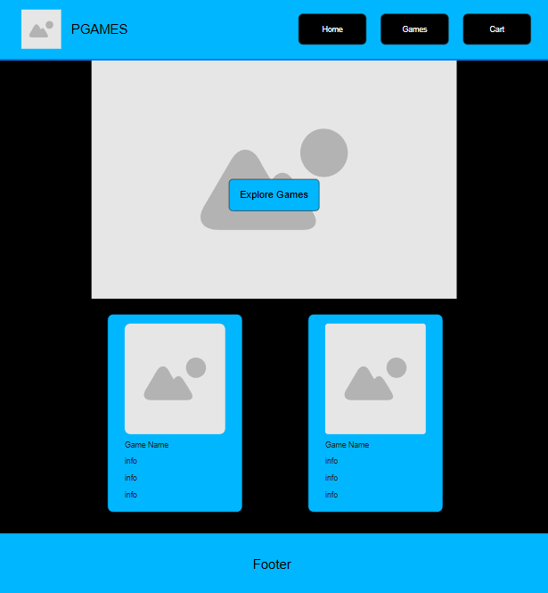
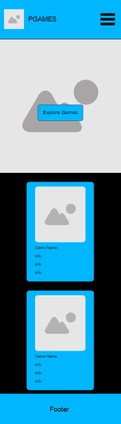

Site Name: PGames
Reason: The “P” comes from my last name, and together with “Games,” it forms a simple and personal name that clearly represents a gaming website.
Site Purpose: The website provides a platform for PC gamers to discover, browse, and simulate the purchase of video games. It features a catalog with search and filter options, detailed listings with names, prices, and ratings, and a shopping cart to complete a mock checkout. The goal is to offer an engaging and intuitive shopping experience tailored to the gaming community.
Scenario 1: “I want to find the newest action games available for PC. How can I filter the catalog to see them?”
Scenario 2: “I want to read more details and reviews about a specific game before deciding to buy it.”
-Color Schema-
Primary Color:Neon Blue (#00FFFF) — Used for buttons, highlights, banners, and interactive elements.
Secondary Color:Black (#000000) — Used for the background and some text
Accent Color:Neon Purple (#8A2BE2) — For hover effects or secondary highlights
-Typography-
Primary Font: Inter | Body text, paragraphs, buttons, and general content.
Secondary Font: Bebas Neue | Headings, banners, and section titles.
--Desktop--
--Mobile--
